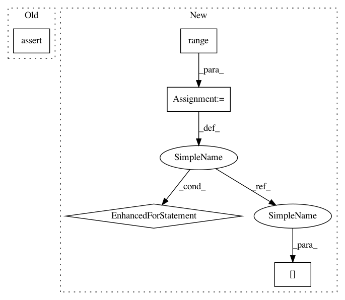

b09454afb34000634c8a77050135e3201f6f365d,chainercv/utils/testing/assertions/assert_is_detection_dataset.py,,assert_is_detection_dataset,#Any#Any#Any#,8
Before Change
"The shape of label must be (*,)."
assert len(label) == len(bbox), \
"The length of label must be same as that of bbox."
assert label.min() >= 0 and label.max() < n_fg_class, \
"The value of label must be in [0, n_fg_class - 1]."
After Change
i = np.random.randint(0, len(dataset))
_check_example(dataset[i], n_fg_class)
else:
for i in six.moves.range(len(dataset)):
_check_example(dataset[i], n_fg_class)
def _check_example(example, n_fg_class):
assert len(example) >= 3, \
"Each example must have at least three elements:" \
"img, bbox and label."
In pattern: SUPERPATTERN
Frequency: 3
Non-data size: 5
Instances
Project Name: chainer/chainercv
Commit Name: b09454afb34000634c8a77050135e3201f6f365d
Time: 2017-06-14
Author: Hakuyume@users.noreply.github.com
File Name: chainercv/utils/testing/assertions/assert_is_detection_dataset.py
Class Name:
Method Name: assert_is_detection_dataset
Project Name: chainer/chainercv
Commit Name: b09454afb34000634c8a77050135e3201f6f365d
Time: 2017-06-14
Author: Hakuyume@users.noreply.github.com
File Name: chainercv/utils/testing/assertions/assert_is_semantic_segmentation_dataset.py
Class Name:
Method Name: assert_is_semantic_segmentation_dataset
Project Name: chainer/chainercv
Commit Name: b09454afb34000634c8a77050135e3201f6f365d
Time: 2017-06-14
Author: Hakuyume@users.noreply.github.com
File Name: chainercv/utils/testing/assertions/assert_is_detection_dataset.py
Class Name:
Method Name: assert_is_detection_dataset
Project Name: OpenNMT/OpenNMT-py
Commit Name: d0af494e81eb8612cbd688417204d2e21a5d4306
Time: 2017-08-23
Author: srush@seas.harvard.edu
File Name: onmt/Loss.py
Class Name: LossCompute
Method Name: computeLoss